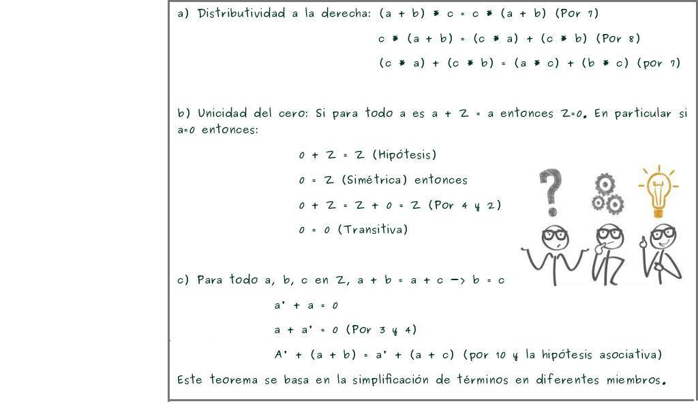
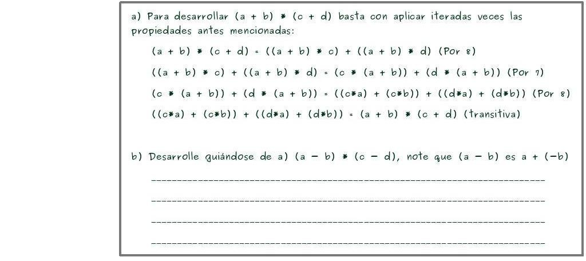

En la medida en que las leyes de las matemáticas se refieren a la realidad, no son exactas, y en tanto son exactas, no se refieren a la realidad.-Albert Einstein.
Dominio de Integridad:
Es un anillo íntegro que no posee divisores de cero, es conmutativo y unitario.
Los números enteros son un dominio de integridad, definidos por el conjunto Z( (... -4, -3, -2, -1, 0, 1, 2, 3, ...) con una operación + y otra • con las siguientes propiedades:
Estas propiedades, que fueron extraídas por la experiencia humana en la práctica de las operaciones+ y •, pueden considerarse definiciones de esas operaciones, en este caso de es la definición de los números enteros.
Estos axiomas bastan para demostrar una serie de propiedades que en álgrebra elemental se dan como nuevas. Además estas propiedades anteriormente demostradas, valen para cualquier dominio de integridad. Por ejemplo:

Además de esto, podemos Desarrollar operaciones siguiendo estos axiomas, como por ejemplo:

Relación de orden:
Un dominio de integridad es ordenado si se pueden distinguir en él ciertos elementos llamados positivos Z+ = {..,a,b,c,...} tales que:
a) a Z+ tal que b Z+ a + b Z+ ∈ ∈ ⇒ ∈
a Z+ tal que b Z+ a • b Z+ ∈ ∈ ⇒ ∈
b) Tricotomía: a es positivo, a es cero o bien -a es positivo.
Principio del buen ordenamiento:
Un conjunto se dice ordenado si entre dos cualesquiera de sus elementos se da la relación a < b ó bien a = b ó bien b < a. Demostración:
Por ejemplo: El conjunto de los números naturales, con el orden natural (m ≤ n si existe k ∈ N tal que n = m+k) es un conjunto totalmente ordenado. De la misma forma, también lo son (Z, ≤), (Q, ≤) y (R, ≤).
Un conjunto bien ordenado es un conjunto no vacío totalmente ordenado tal que todo subconjunto no vacío tiene un elemento mínimo (primer elemento). Por ejemplo, los naturales cuyo primer elemento es el cero.
Un conjunto parcialmente ordenado es un conjunto equipado con una relación binaria de orden parcial, que formaliza el concepto intuitivo de orden, secuencia, o arreglo de los elementos del conjunto. Tal orden no necesariamente debe ser total, es decir, no se necesita que se puedan comparar unos con otros todos los elementos del conjunto. Sin embargo esto puede ocurrir en algunos casos (en otras palabras, el orden total es un caso particular del orden parcial).
Haciendo uso de las relaciones de orden, Demostrar:
Principio de Inducción Completa:
El principio de la inducción matemáticas es un razonamiento que permite demostrar proposiciones que dependen de una variable N, que toma una infinidad de valores enteros. Es decir:
El número entero A, tiene la propiedad P. El hecho de que cualquier número entero N, también tenga la propiedad P, implica que N+1, también la tiene. Entonces todos los números enteros a partir de A, tienen la propiedad P.
Para probar una proposición por inducción matematica se debe:
1) Probar la proposición para N=1.
2) Probar la proposición para N=k (lo cual se acepta como verdadero por la hipótesis de la inducción).
3) Si la propiedad se cumple para N=1 y para N=k entonces la propiedad de cumple para N=k+1.
Ejemplos:
Video Ayuda (Inducción Mátematica):
Bibliografía:
Domingo, C. Rodríguez, C. Dávila, J. Inducción Matemática. Venezuela. http://nux.ula.ve/mathematica/guias/induccion-matematica.pdf
Revilla, F. (2014) Anillos de integridad, Madrid. http://fernandorevilla.es/blog/2014/04/11/anillos-de-integridad/
Miranda, J. (2006) Conjuntos ordenados. Retículos y álgebras de Boole. http://www.ugr.es/~jesusgm/Curso%202005-2006/Matematica%20Discreta/Ordenes.pdf
Conjunto bien ordenado (s. f). En Wikipedia. Recuperado el 29 de Abril de 2016. https://es.wikipedia.org/wiki/Conjunto_bien_ordenado
Conjunto parcialmente ordenado (s. f). En Wikipedia. Recuperado el 29 de Abril de 2016. https://es.wikipedia.org/wiki/Conjunto_parcialmente_ordenado
Inducción Matematica (s.f). En Wikipedia. Recuperado el 25 de Abril de 2016. https://es.wikipedia.org/wiki/Inducci%C3%B3n_matem%C3%A1tica
Gelabert, J. (2014) Reflexiones Matemáticas, Rep. Dominicana. http://es.slideshare.net/alexandergelabert/problemas-resueltos-sobre-induccin-matemtica
Méndez, J. Juan Carlos Méndez (2013/04/06) Inducción Matemática - Ejemplo 1. https://www.youtube.com/watch?v=6PA4uQp2SAc